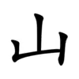

山 메 산 | |||
부수 및 나머지 획수 |
山, 0획 |
총 획수 |
3획 |
중학교 | |||
이체자 셀렉터
| |||
일본어 음독 |
サン, セン | ||
일본어 훈독 |
やま | ||
이체자 셀렉터
| |||
표준 중국어 |
shān | ||
 |
획순 |
목차
1. 개요
山은 '메 산'이라는 한자로, '산', '무덤' 등을 뜻한다. 그래서 '뫼 산'[1]이라고도 한다.'산 산'이라고 하는 건 관습적으로 틀린 말이다.[2]
𡶸이 한자를 들어 "동자(同字)[3]이긴 하나 최근 50년 사이에 나온 중국 한자 중 하나이며, 대만식으로 '산 산'으로 읽는다"는 말이 있었으나, 해당 [산]자는 이체자일 뿐이고, 이체자는 애초에 형태가 다른 글자일 뿐이므로 읽는 방식도 같게 된다. 당장 해당 사전에 들어가보아도 "메 산"으로 표기되어 있는 것을 볼 수 있다.[4][5]
2. 상세
| 한자문화권의 언어별 발음 | ||
| 한국어 | 훈 | 메 |
| 음 | 산 | |
| 중국어 | 표준어 | shān |
| 광동어 | saan1 | |
| 감어 | san1 | |
| 객가어 | sân | |
| 진어 | san1 | |
| 민북어 | súing | |
| 민동어 | săng | |
| 민남어 | san[6] / soaⁿ[7] | |
| 오어 | se (T1) | |
| 장어 | san1 | |
| 일본어 | 음독 | サン, セン |
| 훈독 | やま | |
| 베트남어 | sơn | |
| 아이누어 | yam, yaman | |
△△△
이 모양에서 산기슭 부분이 가로획으로, 봉우리 부분이 세로획으로 변해서 지금에 이르고 있다.
유니코드에는 U+5C71에 배당되어 있으며, 창힐수입법으로는 U(山)로 입력한다.
뜻인 '메'[8]는 산을 뜻하는 순우리말이다. 현대에는 한자어인 '산'에 밀려 잘 쓰이지 않는 말이나 상표명, 회사명 등에서는 자주 쓰이고 있다.
이 한자가 부수로 쓰이는 한자는 산이나 고개 등과 관련된 뜻이 많다.
3. 용례
3.1. 부수
강희자전 수록 부수 주로 변이나 머리에 위치하며, 부수로써 붙을 때는 주로 산이나 언덕에 관한 뜻을 나타낸다.대표적인 한자로 嶺(고개 령), 峻(높을 준), 峯(봉우리 봉), 巖(바위 암), 岾(고개 점) 등이 있다.
3.2. 단어
- 산#s-1(山)
- 강산(江山)
- 거산(居山/巨山/鋸山)
- 경산(京山/瓊山)
- 고산(孤山/故山/高山)
- 고산병(高山病)
- 공산(公山/空山)
- 광산(鑛山)
- 군산(群山)
- 금산(禁山/金山)
- 낙산(落山)
- 도산(刀山/到山/島山/陶山)
- 동산(東山/童山/銅山)
- 등산(登山)
- 빙산(氷山)
- 산가(山家)
- 산간#s-1(山間)
- 산림(山林)
- 산맥(山脈)
- 산사(山寺)
- 산사태(山沙汰)
- 산성(山城)
- 산소(山所)
- 산수(山水/山獸)
- 산수화(山水畵)
- 산악(山岳)
- 산악인(山岳人)
- 산약(山藥)
- 산양(山羊/山陽/山養)
- 산적(山賊)
- 산지(山地)
- 산천(山川)
- 산촌(山村)
- 산하(山下/山河)
- 산행(山行)
- 선산(先山/善山)
- 설산(雪山)
- 성산(聖山)
- 신산(新山/神山)
- 안산(案山)
- 암산(岩山/巖山)
- 와사비(山葵)
- 조산(祖山/造山)
- 조산운동(造山運動)
- 천산갑(穿山甲)
- 첩첩산중(疊疊山中)
- 청산(靑山)
- 치산치수(治山治水)
- 하산(下山)
- 화산(火山)
- 화산암(火山巖)
- 사화산(死火山)
- 활화산(活火山)
- 휴화산(休火山)
3.3. 고사성어/숙어
- 고산준령(高山峻嶺)
- 금수강산(錦繡江山)
- 만산홍엽(滿山紅葉)
- 무산지몽(巫山之夢)
- 무산지우(巫山之雨)
- 무산지운(巫山之雲)
- 무주공산(無主空山)
- 배산임수(背山臨水)
- 산고수장(山高水長) - 산은 높이 솟고 강물은 유유(悠悠)히 흐른다는 뜻으로, 군자(君子)의 덕이 높고 끝없음을 우뚝 솟은 산에, 겸손함을 강물의 흐름에 비유적으로 이르는 말이다.
- 산자수려(山紫水麗)
- 산전수전(山戰水戰) - 산에서도 싸우고 물에서도 싸웠다는 말로, 사람이 살아오면서 세상의 온갖 고생과 어려움을 다 겪었다는 뜻이다.
- 산천초목(山川草木)
- 삼수갑산(三水甲山)
- 심산유곡(深山幽谷)
- 역발산기개세(力拔山氣蓋世)
- 요산요수(樂山樂水)
- 우공이산(愚公移山)
- 인자요산 지자요수(仁者樂山 智者樂水)
- 인산인해(人山人海)
- 종호귀산(縱虎歸山)
- 적막강산(寂寞江山)
- 주마간산(走馬看山)
- 천산만수(千山萬水)
- 타산지석(他山之石)
- 태산명동서일필(泰山鳴動鼠一匹)
- 태산불양토양 하해불택세류(泰山不辭土壤 河海不擇細流)
3.4. 인명
- 김산(金山)
- 안산(安山)
- 안녹산(安禄山)
- 에츠잔 자쿠스이(越山 弱衰)
- 역도산(力道山)
- 옌시산(閻錫山)
- 우에스기 요잔(上杉 鷹山)
- 유진산(柳珍山)
- 이산(怡山)
- 이산해(李山海)
- 야마시타 토모히사(山下 智久)
- 전의산(全儀山)
- 야마다(山田): 일본의 성씨
- 야마토(山戸, 山門, 山登, 山藤, 山東): 일본의 성씨
- 야마시타(山下): 일본의 성씨
- 야마모토(山本): 일본의 성씨
- 야마자키(山崎): 일본의 성씨
- 야마카와(山川):일본의 성씨
- 마루야마(丸山): 일본의 성씨
- 무라야마(村山): 일본의 성씨
- 니이야마(新山): 일본의 성씨
- 카게야마(蔭山, 影山, 景山): 일본의 성씨
- 나가야마(永山, 長山): 일본의 성씨
- 나카야마(中山): 일본의 성씨
- 나카야마(那蚊山): 일본의 성씨
- 마츠야마(松山): 일본의 성씨
- 모리야마(森山, 盛山): 일본의 성씨
- 미야마(深山, 三山, 美山, 見山): 일본의 성씨
- 사야마(佐山, 作山, 猿山, 狹山): 일본의 성씨
- 스기야마(杉山, 椙山): 일본의 성씨
- 아라시야마(嵐山): 일본의 성씨
- 아오야마(青山): 일본의 성씨
- 아키야마(秋山): 일본의 성씨
- 야마가타(山形, 山県, 山縣): 일본의 성씨
- 야마구치(山口): 일본의 성씨
- 야마나시(山梨): 일본의 성씨
- 야마나카(山中, 山仲): 일본의 성씨
- 야마노(山野): 일본의 성씨
- 야마무라(山村): 일본의 성씨
- 야마부키(山吹): 일본의 성씨
- 야마사키(山崎): 일본의 성씨
- 야마오카(山岡): 일본의 성씨
- 야마하(山羽, 山葉): 일본의 성씨
- 오야마(大山): 일본의 성씨
- 요코야마(横山): 일본의 성씨
- 카미야마(神山, 上山, 加美山): 일본의 성씨
- 카야마(加山, 香山): 일본의 성씨
- 코야마(小山, 神山, 光山): 일본의 성씨
- 키리야마(桐山): 일본의 성씨
- 타니야마(谷山): 일본의 성씨
- 타테야마(立山, 館山, 楯山): 일본의 성씨
- 토야마(当山, 當山, 東山, 戸山, 外山, 富山): 일본의 성씨
- 토쿠야마(徳山): 일본의 성씨
- 하야마(葉山): 일본의 성씨
- 후쿠야마(福山): 일본의 성씨
- 히가시야마(東山): 일본의 성씨
- 히라야마(平山): 일본의 성씨
- 히야마(火山, 桧山, 檜山, 樋山): 일본의 성씨
3.5. 지명
하지만 여러 봉우리로 이루어진 산의 한 봉우리를 일컬을 때는 '~봉'을 쓰고, 제주특별자치도에 있는 기생 화산[9]들은 주로 고유어를 써서 '~오름'이라는 이름이 붙는다.- 강원특별자치도
- 강릉시
- 성산면 (城山面)
- 구산리 (邱山里)
- 금산리 (金山里)
- 산북리 (山北里)
- 영월군
- 무릉도원면 두산리(斗山里)
- 영월읍 문산리(文山里)
- 원주시
- 우산동 (牛山洞)
- 일산동 (一山洞)
- 부론면 정산리 (鼎山里)
- 호저면
- 고산리 (高山洞)
- 산현리 (山峴里)
- 옥산리 (玉山里)
- 주산리 (珠山里)
- 정선군
- 정선읍 애산리(愛山里)
- 임계면 용산리(龍山里)
- 춘천시
- 남산면 (南山面)
- 남면 발산리 (鉢山里)
- 동산면 (東山面)
- 북산면 (北山面)
- 서면 금산리 (錦山里)
- 신북읍
- 발산리 (鉢山里)
- 산천리 (山泉里)
- 용산리 (龍山里)
- 평창군
- 대관령면 용산리(龍山里)
- 용평면 재산리(才山里)
- 진부면 동산리(東山里)
- 진부면 봉산리(鳳山里)
- 경기도
- 가평군
- 가평읍 산유리(山柳里)
- 설악면 송산리(松山里)
- 군포시 산본동(山本洞), 산본신도시(山本新都市)
- 고양시
- 덕양구
- 관산동(官山洞)
- 동산동(東山洞)
- 일산신도시(一山新都市)
- 일산동구(一山東區)
- 산황동(山黃洞)
- 정발산동(鼎鉢山洞)
- 중산동(中山洞)
- 일산서구(一山西區)
- 구산동(九山洞)
- 일산동(一山洞)
- 광명시 철산동(鐵山洞)
- 광주시
- 고산동(高山洞)
- 남한산성면(南漢山城面) 산성리(山城里)
- 매산동(梅山洞)
- 퇴촌면 우산리(牛山里)
- 김포시
- 고촌읍 향산리(香山里)
- 대곶면 오니산리(吾尼山里)
- 마산동(麻山洞)
- 양촌읍 누산리(樓山里)
- 월곶면 갈산리(葛山里)
- 하성면 원산리(元山里)
- 남양주시
- 다산동(茶山洞), 다산신도시(茶山新都市)
- 수동면 수산리(水山里)
- 화도읍 차산리(車山里)
- 동두천시
- 걸산동(傑山洞)
- 보산동(保山洞)
- 성남시
- 수정구 산성동(山城洞)
- 분당구 하산운동(下山雲洞)
- 수원시 팔달구
- 매산동(梅山洞)
- 매산로1가(梅山路一街)
- 매산로2가(梅山路二街)
- 매산로3가(梅山路三街)
- 시흥시
- 미산동(米山洞)
- 방산동(芳山洞)
- 산현동(山峴洞)
- 안산시(安山市)
- 안성시
- 고삼면 봉산리(鳳山里)
- 금광면
- 개산리(開山里)
- 오산리(梧山里)
- 금산동(錦山)
- 대덕면 모산리(茅山里)
- 미양면 마산리(馬山里)
- 봉산동(鳳山洞)
- 삼죽면 덕산리(德山里)
- 서운면
- 북산리(北山里)
- 산평리(山坪里)
- 송산리(松山里)
- 신모산동(新茅山洞)
- 양성면
- 미산리(美山里)
- 산정리(山井里)
- 필산리(筆山里)
- 옥산동(玉山洞)
- 원곡면 산하리(山下里)
- 일죽면
- 금산리(金山里)
- 산북리(山北里)
- 죽산면(竹山面) 죽산리(竹山里)
- 안양시 동안구 비산동(飛山洞)
- 양주시
- 남면
- 신산리(莘山里)
- 한산리(閑山里)
- 백석읍
- 기산리(基山里)
- 오산리(烏山里)
- 산북동(山北洞)
- 양평군
- 강상면 병산리(屛山里)
- 단월면
- 산음리(山陰里)
- 석산리(石山里)
- 양동면(양평) 삼산리(三山里)
- 지평면 월산리(月山里)
- 여주시
- 가남읍 오산리(五山里)
- 대신면
- 가산리(加山里)
- 당산리(堂山里)
- 북내면 덕산리(德山里)
- 산북면(山北面)
- 연천군
- 신서면
- 내산리(內山里)
- 덕산리(德山里)
- 연천읍 옥산리(玉山里)
- 중면
- 어적산리(漁積山里)
- 적동산리(積洞山里)
- 횡산리(橫山里)
- 오산시(烏山市)
- 부산동(釜山洞)
- 오산동(烏山洞)
- 양산동(陽山洞)
- 용인시 처인구
- 모현읍
- 매산리(梅山里)
- 오산리(吳山里)
- 왕산리(旺山里)
- 일산리(日山里)
- 백암면 옥산리(玉山里)
- 의정부시
- 고산동(高山洞)
- 산곡동(山谷洞)
- 이천시
- 갈산동(葛山洞)
- 부발읍
- 가산리(柯山里)
- 산촌리(山村里)
- 설성면
- 수산리(樹山里)
- 암산리(岩山里)
- 율면
- 산성리(山星里)
- 산양리(山陽里)
- 석산리(石山里)
- 호법면
- 동산리(東山里)
- 유산리(酉山里)
- 장호원읍 송산리(松山里)
- 파주시
- 검산동(檢山洞)
- 광탄면
- 기산리(基山里)
- 신산리(新山里)
- 군내면
- 송산리(松山里)
- 조산리(造山里)
- 문산읍(文山邑)
- 문산리(文山里)
- 장산리(長山里)
- 산남동(山南洞)
- 연다산동(煙多山洞)
- 월롱면 능산리(陵山里)
- 장단면
- 덕산리(德山里)
- 도라산리(都羅山里)
- 조리읍 오산리(梧山里)
- 진동면 용산리(龍山里)
- 탄현면 금산리(錦山里)
- 파평면 마산리(麻山里)
- 평택시
- 지산동(芝山洞)
- 진위면
- 견산리(見山里)
- 마산리(馬山里)
- 은산리(銀山里)
- 청북읍 한산리(閑山里)
- 팽성읍 남산리(南山里)
- 현덕면
- 기산리(岐山里)
- 황산리(黃山里)
- 포천시
- 가산면(加山面)
- 가산리(加山里)
- 마산리(馬山里)
- 군내면 명산리(鳴山里)
- 영북면
- 대회산리(大回山里)
- 소회산리(小回山里)
- 일동면 기산리(機山里)
- 창수면 운산리(雲山里)
- 하남시
- 교산동(校山洞)
- 상산곡동(上山谷洞)
- 풍산동(豊山洞)
- 하산곡동(下山谷洞)
- 화성시
- 동탄구
- 산척동(山尺洞)
오산동(梧山洞)[10]- 만세구
- 송산면(松山面) 마산리(馬山里)
- 양감면 송산리(松山里)
- 우정읍 화산리(花山里)
- 병점구
- 기산동(機山洞)
- 송산동(松山洞)
- 화산동(花山洞)
- 효행구 정남면 발산리(鉢山里)
- 경상남도
- 양산시(梁山市)
- 창원시
- 마산합포구(馬山合浦區)
- 마산회원구(馬山檜原區)
- 성산구(城山區)
- 통영시 한산면(閑山面), 한산도(閑山島)
- 경상북도
- 경산시(慶山市)
- 영천시 완산동(完山洞)
- 대구광역시
- 중구
- 계산동1·2가(桂山洞)
- 남산동(南山洞)
- 덕산동(德山洞)
- 동산동(東山洞)
- 봉산동(鳳山洞)
- 동구 둔산동(屯山洞)
- 북구
- 산격동(山格洞)
- 침산동(砧山洞)
- 부산광역시(釜山廣域市)
- 강서구 녹산동(菉山洞)
- 금정구 남산동(南山洞)
- 부산진구(釜山鎭區)
- 서울특별시
- 강서구
- 내발산동(內鉢山洞)
- 우장산동(雨裝山洞)
- 외발산동(外鉢山洞)
- 금천구
- 가산동(加山洞)
- 독산동(禿山洞)
- 마포구
- 노고산동(老姑山洞)
- 성산동(城山洞)
- 영등포구 당산동(堂山洞)
- 당산동1가(堂山洞一街)
- 당산동2가(堂山洞二街)
- 당산동3가(堂山洞三街)
- 당산동4가(堂山洞四街)
- 당산동5가(堂山洞五街)
- 당산동6가(堂山洞六街)
- 용산구(龍山區)
- 용산동(龍山洞)
- 용산동1가(龍山洞一街)
- 용산동2가(龍山洞二街)
- 용산동3가(龍山洞三街)
- 용산동4가(龍山洞四街)
- 용산동5가(龍山洞五街)
- 용산동6가(龍山洞六街)
- 산천동(山泉洞)
- 은평구
- 구산동(龜山洞)
- 증산동(繒山洞)
- 중구
- 남산동1가(南山洞一街)
- 남산동2가(南山洞二街)
- 남산동3가(南山洞三街)
- 다산동(茶山洞)[11]
- 방산동(芳山洞)
- 산림동(山林洞)
- 세종특별자치시 조치원읍 침산리(砧山里)
- 울산광역시(蔚山廣域市)
- 남구 삼산동(三山洞)
- 북구 산하동(山下洞)
- 울주군 온산읍(溫山邑)
- 중구 학산동(鶴山洞)
- 인천광역시
- 계양구 계산동(桂山洞)
- 강화군
- 강화읍
- 남산리(南山里)
- 대산리(大山里)
- 교동면 동산리(東山里)
- 삼산면(三山面)
- 선원면 지산리(智山里)
- 송해면 당산리(堂山里)
- 양도면
- 인산리(仁山里)
- 조산리(造山里)
- 양사면
- 교산리(橋山里)
- 철산리(鐵山里)
- 화도면 문산리(文山里)
- 남동구 수산동(壽山洞)
- 부평구
- 갈산동(葛山洞)
- 구산동(九山洞)
- 산곡동(山谷洞)
- 삼산동(三山洞)
- 전남광주통합특별시
- 광산구 (光山區)
- 전북특별자치도
- 군산시(群山市)
- 익산시(益山市)
- 전주시 완산구(完山區) 완산동(完山洞), 중화산동(中華山洞)
- 제주특별자치도 애월읍 수산리(水山里)
- 충청남도
- 금산군(錦山郡)
- 논산시(論山市)
- 서산시(瑞山市)
- 아산시(牙山市)
- 기산동(岐山洞)
- 예산군(禮山郡)
- 충청북도
- 청주시 산남동(山南洞)
- 괴산군(槐山郡)
- 평안남도
- 맹산군(孟山郡)
- 평안북도
- 운산군(雲山郡)
- 철산군(鐵山郡)
- 초산군(楚山郡)
- 함경남도
- 갑산군(甲山郡)
- 원산시(元山市)
- 풍산군(豊山郡)
- 함경북도
- 무산군(茂山郡)
- 황해도
- 곡산군(谷山郡)
- 봉산군(鳳山郡)
- 평산군(平山郡)
- 중국
- 러산시(乐山市)
- 마안산시(马鞍山市)
- 메이산시(眉山市)
- 바이산시(白山市)
- 산난시(山南市)
- 산둥성(山东省)
- 산시성(山西省)
- 솽야산시(双鸭山市)
- 안산시(鞍山市)
- 저우산시(舟山市)
- 중산시(中山市)
- 탕산시(唐山市)
- 핑딩산시(平顶山市)
- 포산시(佛山市)
- 화산(華山)
- 일본
- 란잔(嵐山)
- 산요
- 산인
- 쇼군잔역(将軍山駅)
- 아라시야마(嵐山)
- 야마가타현(山形県)/야마가타시
- 야마나시현(山梨県)[12]/야마나시시
- 야마구치현(山口県)/야마구치시
- 오카야마현(岡山県)/오카야마시
- 와카야마현(和歌山県)
3.6. 창작물
3.7. 기타
- 귀수산(龜首山)
- 낙산사(洛山寺)
- 산남로(山南路)
- 산사춘(山査春)
- 산정온천(山井溫泉)
- 산천어(山川魚)
- 산해관(山海關)
- 소백산맥(燒百山麥)
- 쇼샤산 로프웨이(書写山ロープウェイ)
- 야마메(山女)
- 야마비코(山彦)
- 야마노테선(山手線)
- 야마구치구미(山口組)
- KTX-산천(KTX-山川)
- 타이베이 첩운 쑹산신뎬선(台北捷運松山新店線)
4. 역명


 고속열차, 일반열차, 기차 정차역
고속열차, 일반열차, 기차 정차역


5. 다리
6. 모양이 비슷한 한자
7. 여담
- 이 한자를 이용한 산을 표현한 수화는 인터넷 밈으로 자리잡기도 했다.
각주
- [1] '메'가 중세 한국어 '뫼'에서 유래한 단어인 것은 맞지만, 산을 뜻하는 '뫼'는 고유명사에서의 쓰임을 제외하면 사실상 사어화되었으며 현대 한국 표준어 기준으로 '메'와 '뫼'는 엄연히 전혀 다른 뜻이다. '메'는 "산을 예스럽게 이르는 표현"인 반면 현대어의 '뫼'는 "사람의 무덤"을 의미한다. ↑
- [2] 국립국어원 같은 어문학적으로 지배적인 기관은 아니나, 한국어문회는 "배정한자 전체 대표 훈음 부수 명기본"에서 대표훈음을 "메"라고 명기하고 있다.# ↑
- [3] 같은 글자, 여기선 이체자가 된다 ↑
- [4] 애초에 중화권에서의 음독과 훈독은 구별이 없으며, 이에 따라 𡶸(산)자가 대만에서 나와 대만식으로 읽어야 한다는 말에는 어폐가 생긴다. 동자(이체자)라면 대만에서도 결국 궁극적인 뜻은 (순우리말로) "메(뫼)"일 것이고, 관습적으로 한자의 뜻-음을 말할 땐 뜻은 될수록 순우리말로, 음은 한자음을 그대로 읽기 때문에, 결국 읽는 방법은 "메(뫼) 산"이다. 이런 읽기 방식은 훈몽자회(1527년)에서도 보이는 방식으로 유서가 깊다. ↑
- [5] 더구나 이것이 근 50년사이에 나온 최신 한자라는 것도 출처가 불분명한데, 대만 교육부 이체자자전은 𡶸를 山의 이체자로 수록하면서, <字彙補·山部>와 <漢三老袁君碑>를 제시한다. 한나라 시절 비석인 <漢三老袁君碑(한삼로원군비)>의 사용례를 들어 청나라 시절 한자 사전인<字彙補(자휘보)>에서 山이라 풀이한 글자라는 것을 근거로 든 것이다. 따라서 이 글자는 현대에 갑자기 만들어진 신조 한자라기보다는, 고문헌·비문에서 확인되는 山의 이체자로 보는 편이 타당한 것이다. # ↑
- [6] 文 문독 ↑
- [7] 白 백독 ↑
- [8] '메아리', '두메산골', '멧돼지'(사이시옷)의 '메'가 이것이다. ↑
- [9] 한라산 주변에 있는 규모가 작은 화산들 ↑
- [10] 2026년 3월 1일 여울동으로 명칭 변경 ↑
- [11] 행정동 ↑
- [12] 후지산이 이 곳과 시즈오카 후지시에 걸쳐있다. ↑
- [13] 出(날 출)의 속자 ↑
- [14] 澀의 이체자 ↑